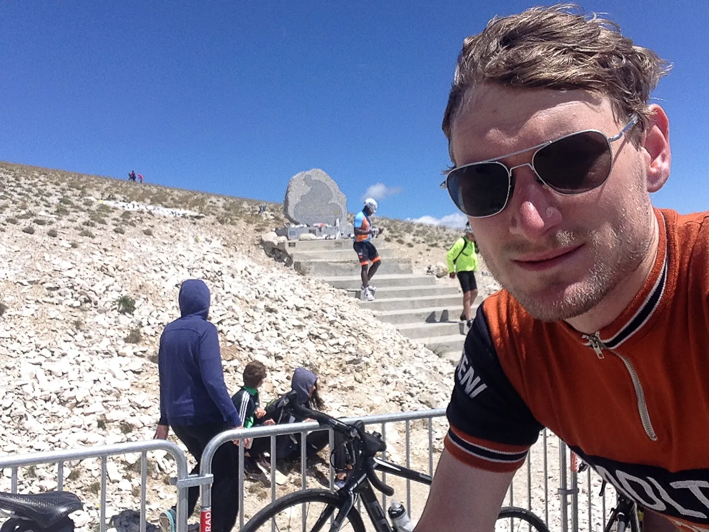
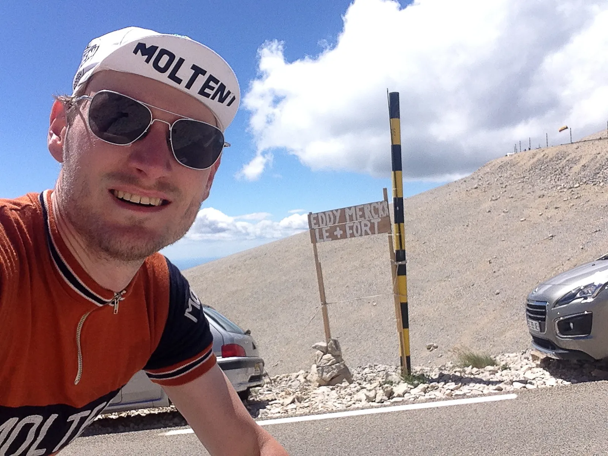

[Video] Dramatisk sejr over Mont Ventoux – Vindstød på 100 km./t.

Det skallede bjerg, Mont Ventoux, blev i dag ramt af vindstød op til stormstyrke. ‘Mistralen’ viste tænder – Men det gjorde Moltenis løjtnant Kasper Sørensen og soigneur Maria Winther også.
Stort set alle ryttere der var på samme mission blev væltet omkuld af den kraftige vind. Heriblandt også Maria, der 200 meter før toppen blev taget af den kraftige vind.
På toppen fangede Kasper fangede de dramatiske scener på sin mobiltelefon.
– Vinden tog min cykel under mig. Kunne intet gøre. Væltede ned i en anden fyr der også lå ned. Heldigt ellers var jeg væltet ned af grøften, fortæller Maria.
Tung stålcykel reddede Kasper
Kasper var en af de få, der i dag vandt over Ventoux og Mistralen.
Vinden flåede Kaspers briller af kort før toppen, en han fortsatte. Han og den tunge Eddy Merckx Molteni var nogle af de få, der nåede toppen.
– Aldrig før har jeg været så glad for at have 10 kg. stål mellem benene, udtaler Kasper, som også på behørig vis løftede på kasketten, da han passerede monumentet for Tom Simpson.
Mange andre kæmpede rigeligt med at deres fjerlette kunststofcykler ikke blev taget af vinden mens de trak nedad
Kasper passerede både et skilt til Ære for Eddy Merckx, og løftede på kasketten ved mindestenen for Tom Simpson.



